3 Animasi teks
Berdasarkan cara pemakaiannya, kita bisa membedakan dua jenis animasi, yaitu
animasi teks otomatis dan animasi teks interaktif. Yang dimaksud interaktif adalah,
animasi akan dijalankan apabila ada interaksi dari pemakai. Misalnya animasi akan
dijalankan pada suatu teks apabila seseorang melakukan klik pada teks tersebut.
1.1 Animasi otomatis
Animasi otomatis adalah suatu animasi yang akan dijalankan tanpa menunggu
tindakan dari pemakai, namun berdasarkan kondisi tertentu, misalnya sesaat setelah
halaman dibuka. Berikut ini contoh animasi otomatis. Delapan tampilan berurutan
yang muncul sesaat setelah halaman ditampilkan.
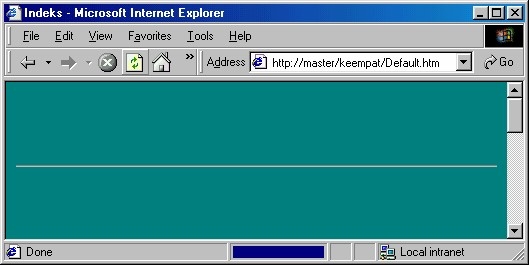
Gambar 8. 15 Langkah pertama
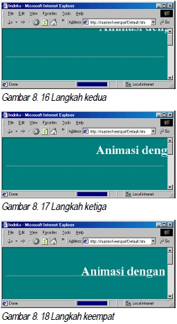
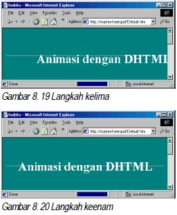
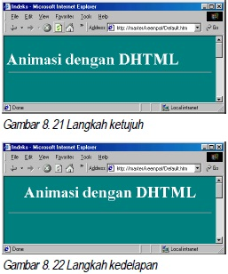
Berikut ini uraian tentang pembuatan animasi otomatis.
1. Buatlah halaman dengan teks yang akan dipasang animasi. Misalnya seperti
berikut ini:
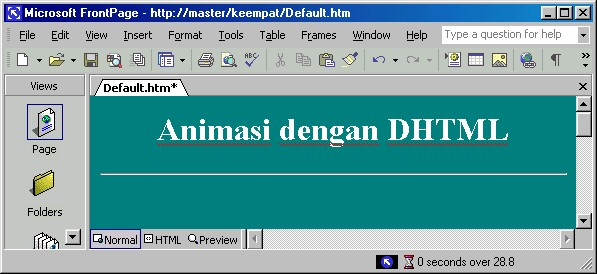
Gambar 8.23 Teks yang akan dipasang animasi
2. Kemudian sorotlah teks tersebut.
3. Aktifkan perintah View _Toolbars _ DHTML Effects. Akan tampil toolbar
DHTML Effects.
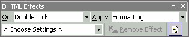
Gambar 8.24 Toolbar DHTML Effects
Perhatikan bahwa animasi yang disediakan oleh FrontPage XP ini merupakan
Dynamic HTML (DHTML) dan dihasilkan oleh script Java (JScript, yaitu
JavaScript versi Microsoft) Di akhir langkah-langkah ini akan Anda lihat seperti apa
script Java.
4. Pada toolbar DHTML Effects, di kotak pilihan On, pilihlah sebuah event,
misalnya Page load. Artinya animasi akan dijalankan sesaat setelah halaman
(Page) di buka (di-load).
5. Pada kotak pilihan Apply, pilihlah jenis animasi yang akan dijalankan. Misalnya
Spiral. Teks akan digerakkan berpilin seperti bentuk spiral.
6. Simpanlah halaman. Untuk mengujinya, klik tab Preview. Kalau animasi yang
dihasilkan terlalu cepat sehingga Anda tidak bisa mengikutinya, tampilkan pada
browser.
Nah, menarik bukan? Kemudian, seperti apa script Java yang menghasilkan animasi
tersebut? Berikut ini cara melihatnya:
1. Tampilkan Folder List jika belum tampil. Perhatikan pada daftar folder dan file
tersebut kini ada sebuah file bernama Animate.js .
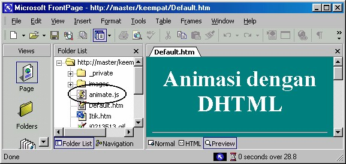
Gambar 8.25 File animate.js
2. Klik ganda file tersebut, Notepad akan membuka isinya, berupa script
pemrograman dalam bahasa Java, seperti Gambar 8.26.
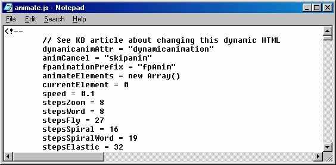
Gambar 8.26 Script Java
1.2 Animasi interaktif
Tidak seperti animasi otomatis, animasi interaktif akan mengadakan reaksi atas
tindakan yang dilakukan oleh pemakai. Tindakan tersebut sering disebut event,
contohnya klik, klik ganda, mouse over dan sebagainya. Event bisa dipsangkan ke
objek yang akan menjalankan efek animasi, misalnya suatu teks. Apabila teks
tersebut di-klik oleh pemakai maka format teks tersebut akan berubah, misalnya
berubah warna, ukuran, maupun jenis font. Berikut ini contoh tampilan pertama teks:
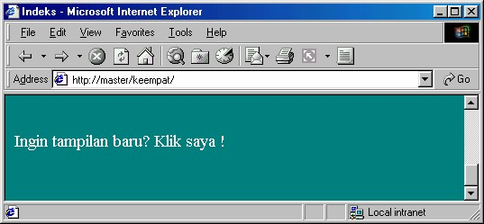
Gambar 8.27 Sebelum event (klik)
Setelah teks di–klik maka formatnya berubah seperti tampilan kedua berikut ini:
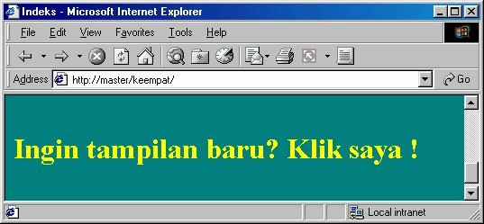
Gambar 8.28 Setelah event
Proses tersebut bersifat bolak balik (toggle), klik pertama akan menghasilkan
tampilan kedua, klik sekali lagi akan kembali ke tampilan pertama dan seterusnya.
Cara membuatnya hampir sama dengan pembuatan animasi otomatis, antara lain:
1. Pilihlah teks.
2. Pada toolbar DHTML Effectsm, di kotak pilihan On, pilihlah event yang bukan
Page Load, seperti Mouse Over, Click atau Double Click.
• Click adalah klik teks tersebut
• Double Click berarti klik ganda teks
• Mouse Over adalah pada saat pointer mouse di atas teks. Misalnya Anda
pilih Click.
3. Kemudian pada kotak pilihan Apply, tentukan pilihan Anda. Untuk event Click,
ternyata hanya ada dau pilihan, yaitu Fly out atau Formatting.
4. Fly out berarti teks akan diterbangkan ke luar halaman dan menghilang.
Sedangkan Formatting berarti teks akan diubah formatnya. Misalnya Anda
memilih Formatting.
5. Kemudian pada kotak pilihan di sebelah kotak pilihan Apply, tentukan pilihan
detilnya. Tersedia Choose Border… dan Choose Font…. Masing-masing untuk
mengatur kotak pembatas teks dan untuk mengatur format font. Misalnya kita
pilih yang kedua. Muncul kotak dialog Font.
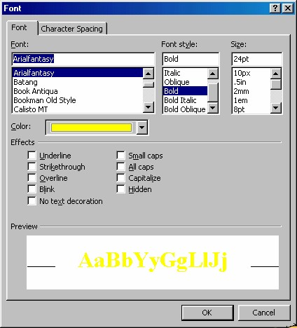
Gambar 8.29 Kotak dialog Font
6. Selanjutnya gunakan kotak dialog Font tersebut untuk mengatur format font
sebagai reaksi atas event klik dari pemakai.
7. Setelah selesai, klik OK.
Anda bisa mencoba hasilnya dengan klik tab Preview, lalu klik teks tersebut, format
baru bagi font tersebut akan diterapkan.
Kalau Anda klik sekali lagi teks tersebut, maka akan kembali ke format semula. Jika
Anda klik lagi, format baru akan ditampilkan ulang, demikian seterusnya.
Copyright © Herlan Lesmana
Created with the Freeware Edition of HelpNDoc: Free PDF documentation generator